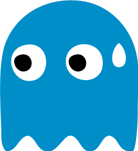
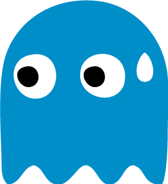

¡Bienvenido a Game Center!


¡Bienvenidos a Game Center!
¡Hola a todos y bienvenidos a Game Center! Somos Ricardo Alvarez y Adrian Coronel, dos entusiastas estudiantes del Instituto Superior de Formación Docente 166, con la pasión de combinar diversión y aprendizaje. Game Center nació como un emocionante proyecto escolar que rápidamente se convirtió en nuestro orgullo: una plataforma de juegos didácticos, como el Ta-Te-Ti, el Ahorcado y el Pasapalabra.
Nuestra Historia
Con la intención de agregar un toque lúdico al mundo educativo, nos propusimos desarrollar una plataforma que ofreciera juegos entretenidos y a la vez educativos. A medida que avanzamos en nuestro proyecto, nos dimos cuenta del impacto positivo que podríamos tener en el aprendizaje de personas de todas las edades.
Nuestra Misión
En Game Center, nuestra misión es proporcionar un espacio atractivo y ameno donde mentes curiosas puedan desafiarse y aprender mientras se divierten. Creemos firmemente en el poder del juego como una herramienta educativa y nos esforzamos por ofrecer una variedad de juegos didácticos que fomenten el pensamiento crítico, la resolución de problemas y el aprendizaje interactivo.
Logros Destacados
Con orgullo, podemos mencionar que Game Center ha sido reconocido por su enfoque innovador en la educación lúdica, recibiendo el premio a la "Mejor Plataforma de Juegos Educativos" en la Conferencia de Innovación Educativa. Además, la creciente comunidad de jugadores y su continuo entusiasmo nos impulsan a seguir desarrollando nuevos juegos y funciones interactivas para hacer de Game Center el destino favorito para la diversión y el aprendizaje.
Nuestro Compromiso
Estamos comprometidos a expandir constantemente nuestra biblioteca de juegos y a ofrecer contenido fresco y desafiante de forma regular. Nuestro equipo de desarrollo trabaja incansablemente para garantizar que cada juego sea educativo, emocionante y accesible para todos. ¡Únete a nosotros en esta emocionante aventura y descubre la alegría de aprender a través del juego en Game Center!